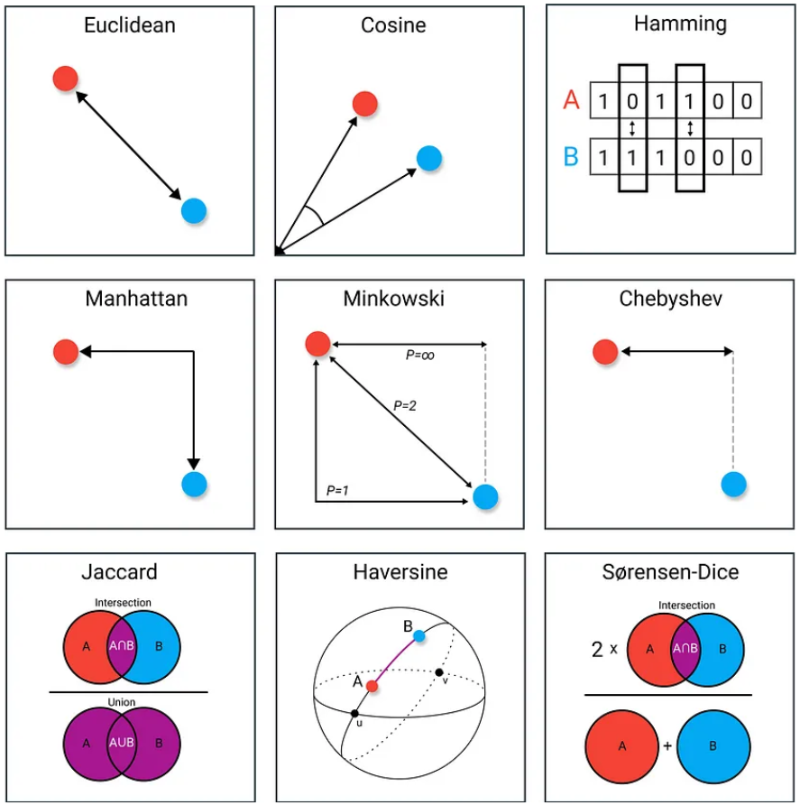
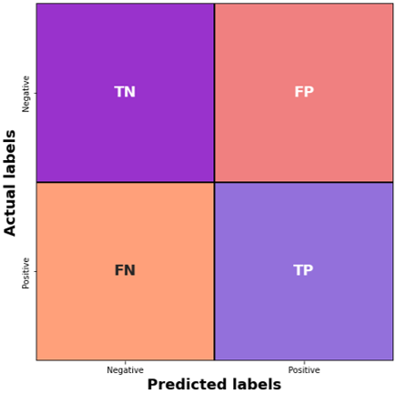
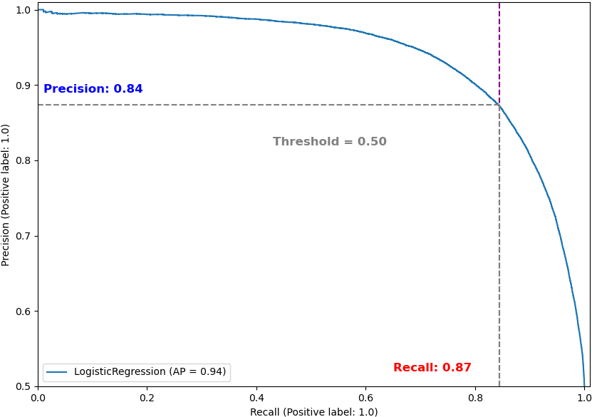
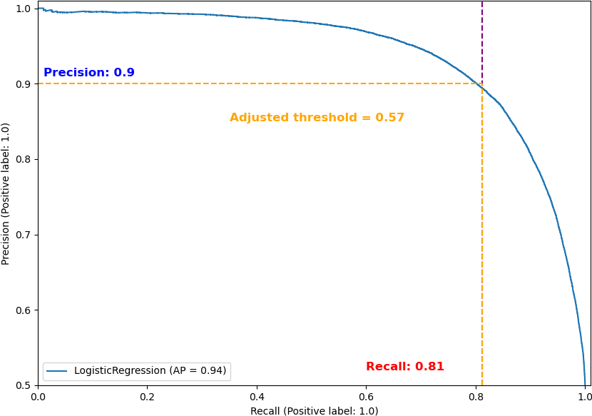
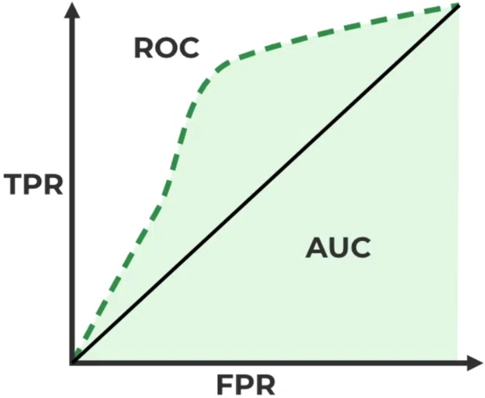
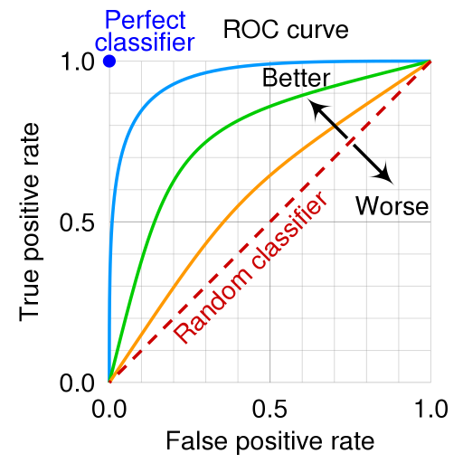
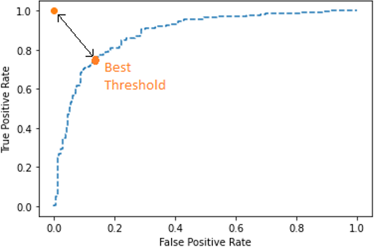

Performance Metrics#
import math
import numpy as np
import pandas as pd
import matplotlib.pyplot as plt
from sklearn.model_selection import train_test_split, cross_validate, cross_val_predict
from sklearn.preprocessing import StandardScaler
from sklearn.linear_model import LinearRegression, LogisticRegression
from sklearn.neighbors import KNeighborsClassifier
from sklearn.metrics import (
mean_squared_error,
mean_absolute_error,
max_error, r2_score,
accuracy_score,
precision_score,
recall_score,
f1_score,
ConfusionMatrixDisplay,
classification_report,
precision_recall_curve,
PrecisionRecallDisplay,
roc_curve,
roc_auc_score
)
Regression metrics#
เราสามารถประเมิน performance ของ regression task ได้ดังนี้
Distance measures#
วัดระยะห่างระหว่าง \(y\) กับ \(\hat{y}\)

Errors#
Mean Squared Error (MSE)
ใช้
sklearn.metrics.mean_squared_error
Root Mean Squared Error (RMSE)
Mean Absolute Error (MAE)
ใช้
sklearn.metrics.mean_absolute_errorLess sensitive to outliers
Max Error (ME)
ใช้
sklearn.metrics.max_error
Coefficient of determination (\(R^2\))
ใช้
sklearn.metrics.r2_scoreมีค่าระหว่าง 1 ถึง \(-\infty\) (ไม่มีหน่วย)
How to choose the right regression error?
Use \(\text{MSE}\) when you need to penalize large errors / sign of error not important
Use \(\text{RMSE}\) when you want to penalize large errors, but see it in the unit of the target.
Use \(\text{MAE}\) when all errors, large or small, have equal importance.
Use \(\text{ME}\) when you want to limit the magnitude of the errors.
Use \(R^{2}\) when you want a general/comparable performance metric / units not required.
# Perform data pre-processing
# Import data and drop duplicate
data = pd.read_csv('../data/fish.csv').drop_duplicates()
# Prepare X and y
X = data[['Length1', 'Length2', 'Length3', 'Height', 'Width']]
y = data['Weight']
# Train-test split
X_train, X_test, y_train, y_test = train_test_split(X, y, train_size=.7, random_state=42)
# Scale features
scaler = StandardScaler().fit(X_train)
X_train = pd.DataFrame(scaler.transform(X_train), columns=X_train.columns)
X_test = pd.DataFrame(scaler.transform(X_test), columns=X_test.columns)
# Predict by linear regression
model = LinearRegression().fit(X_train, y_train)
y_pred = model.predict(X_test)
# Compute regression error
mse = mean_squared_error(y_test, y_pred)
rmse = math.sqrt(mse)
mae = mean_absolute_error(y_test, y_pred)
rsquared = r2_score(y_test, y_pred)
max_error = max_error(y_test, y_pred)
print('MSE =', round(mse, 2))
print('RMSE =', round(rmse, 2))
print('MAE =', round(mae, 2))
print('Max Error =', round(max_error, 2))
print('R2 =', round(rsquared, 2))
MSE = 16217.63
RMSE = 127.35
MAE = 95.58
Max Error = 282.65
R2 = 0.87
ขนาดของ error จะขึ้นกับหน่วยด้วย ไม่มี standardised value (ยกเว้น \(R^2\))
metric ใช้ใน cross validation ได้ โดยกำหนดใน scoring
# 5-Fold cross validation
metrics = ['max_error', 'r2', 'neg_mean_absolute_error', 'neg_mean_squared_error']
cv_results = cross_validate(LinearRegression(), X_train, y_train, cv=5, scoring=metrics)
pd.DataFrame(cv_results)
| fit_time | score_time | test_max_error | test_r2 | test_neg_mean_absolute_error | test_neg_mean_squared_error | |
|---|---|---|---|---|---|---|
| 0 | 0.001091 | 0.002088 | -336.080723 | 0.840449 | -89.720506 | -15567.300902 |
| 1 | 0.002005 | 0.001000 | -423.829702 | 0.879118 | -115.563939 | -23011.831620 |
| 2 | 0.002305 | 0.001009 | -396.512088 | 0.919412 | -74.969312 | -11763.339562 |
| 3 | 0.001507 | 0.002006 | -316.379705 | 0.852831 | -104.515769 | -18943.822954 |
| 4 | 0.001000 | 0.002000 | -234.342973 | 0.809597 | -102.697382 | -13985.709798 |
Classification metrics#
เราใช้ confusion matrix ในการประเมิน performance ของ classification task
Confusion matrix เป็นผลการทำนายของ classification task มีสมาชิกที่เป็นจำนวนหรือสัดส่วนการทำนายที่ถูกต้อง (อยู่ใน diagonal) และที่ไม่ถูกต้อง สร้างได้โดยใช้ sklearn.metrics.ConfusionMatrixDisplay
สำหรับ binary classification (การจำแนกระหว่าง negative (Class 0) กับ positive (Class 1)) จะมี confusion matrix ลักษณะดังนี้
TN = True negative = ข้อมูลที่ถูกทำนายได้ถูกต้องว่าเป็น negative
FN = False negative = ข้อมูลที่ถูกทำนายผิดจาก positive เป็น negative (Type I error)
TP = True positive = ข้อมูลที่ถูกทำนายได้ถูกต้องว่าเป็น positive
FP = False positive = ข้อมูลที่ถูกทำนายผิดจาก negative เป็น positive (Type II error)

Metric ที่หาได้จาก confusion matrix เช่น
Accuracy
ใช้
sklearn.metrics.accuracy_scoreบอกสัดส่วนการทำนายที่ถูกต้องของ model
ใช้เมื่อทุก class สำคัญ และข้อมูลที่อยู่ในแต่ละ class มีความ balanced (ปริมาณใกล้เคียงกัน)
หากข้อมูลไม่ balanced จะได้ค่า accuracy ที่ดีเกินจริง
Recall = True positive rate = Sensitivity
ใช้
sklearn.metrics.recall_scoreบอกสัดส่วนของ positive ที่ model เจอ
ใช้เมื่อเราต้องการให้ model ตรวจเจอข้อมูลใน class ๆ หนึ่งให้มากที่สุด
Precision
ใช้
sklearn.metrics.precision_scoreบอกความสามารถของ model ในการระบุ positive อย่างถูกต้อง
ใช้เมื่อเราให้ความสำคัญกับการระบุ positive
\(F_1\)-score
ใช้
sklearn.metrics.f1_scoreบ่งบอกความสามารถของ model ในการตรวจเจอ positive โดยทำให้ FP น้อยที่สุด
ใช้เป็น metric เทียบกับ model อื่นหรือใช้ dataset อื่น
Specificity
มีค่าเท่ากับ recall
False positive rate
มีค่าเท่ากับ 1-Specificity
# Perform data pre-processing
# Import data and drop duplicate
data = pd.read_csv('../data/wines_binary.csv').drop_duplicates()
# Prepare X and y
X, y = data.drop(columns=['is_good_quality']), data['is_good_quality']
# Train-test split
X_train, X_test, y_train, y_test = train_test_split(X, y, train_size=.7, random_state=42)
# Scale features
scaler = StandardScaler().fit(X_train)
X_train = pd.DataFrame(scaler.transform(X_train), columns=X_train.columns)
X_test = pd.DataFrame(scaler.transform(X_test), columns=X_test.columns)
# Predict by logistic regression
lr = LogisticRegression().fit(X_train, y_train)
y_pred_lr = lr.predict(X_test)
y_prob_lr = lr.predict_proba(X_test)
# Compute classification metrics
print('Accuracy =', round(accuracy_score(y_test, y_pred_lr), 2))
print('Precision =', round(precision_score(y_test, y_pred_lr), 2))
print('Recall =', round(recall_score(y_test, y_pred_lr), 2))
print('F1 score =', round(f1_score(y_test, y_pred_lr), 2))
Accuracy = 0.86
Precision = 0.88
Recall = 0.84
F1 score = 0.86
# 5-Fold cross validation
metrics = ['accuracy', 'precision', 'recall', 'f1']
cv_results = cross_validate(LogisticRegression(), X_train, y_train, cv=5, scoring=metrics)
pd.DataFrame(cv_results)
| fit_time | score_time | test_accuracy | test_precision | test_recall | test_f1 | |
|---|---|---|---|---|---|---|
| 0 | 0.067076 | 0.017284 | 0.857571 | 0.868949 | 0.841864 | 0.855192 |
| 1 | 0.058990 | 0.018330 | 0.861929 | 0.875724 | 0.843294 | 0.859203 |
| 2 | 0.080533 | 0.020866 | 0.861714 | 0.874667 | 0.844152 | 0.859139 |
| 3 | 0.070048 | 0.017132 | 0.861429 | 0.871489 | 0.847562 | 0.859359 |
| 4 | 0.064745 | 0.016625 | 0.859643 | 0.873108 | 0.841270 | 0.856893 |
# Plot confusion matrix
ConfusionMatrixDisplay.from_estimator(lr, X_test, y_test, normalize="all");
# Predict by KNN
knn = KNeighborsClassifier().fit(X_train, y_train)
y_pred_knn = knn.predict(X_test)
y_prob_knn = knn.predict_proba(X_test)
# Compute classification metrics
print('Accuracy =', round(accuracy_score(y_test, y_pred_knn), 2))
print('Precision =', round(precision_score(y_test, y_pred_knn), 2))
print('Recall =', round(recall_score(y_test, y_pred_knn), 2))
print('F1 score =', round(f1_score(y_test, y_pred_knn), 2))
Accuracy = 0.91
Precision = 0.92
Recall = 0.91
F1 score = 0.91
# Plot confusion matrix
ConfusionMatrixDisplay.from_estimator(knn, X_test, y_test, normalize="all");
# Cross-validation and classification report
results = cross_val_predict(knn, X_train, y_train)
pd.DataFrame(classification_report(y_train, results, output_dict=True))
| 0.0 | 1.0 | accuracy | macro avg | weighted avg | |
|---|---|---|---|---|---|
| precision | 0.909194 | 0.914185 | 0.911671 | 0.911689 | 0.911687 |
| recall | 0.914878 | 0.908459 | 0.911671 | 0.911668 | 0.911671 |
| f1-score | 0.912027 | 0.911313 | 0.911671 | 0.911670 | 0.911670 |
| support | 35032.000000 | 34968.000000 | 0.911671 | 70000.000000 | 70000.000000 |
Precision-recall curve#
สำหรับ binary classification task
Precision กับ recall มีความสัมพันธ์แบบ inverse relationship
เราใช้ precision-recall curve เพื่อเปรียบเทียบ precision กับ recall ที่ threshold ต่าง ๆ
เราสามารถสร้าง precision-recall curve โดยใช้
sklearn.metrics.precision_recall_curveและsklearn.metrics.PrecisionRecallDisplay
classification task ที่เราทำมาด้านบน มี precision-recall curve เป็นดังภาพ (model มี threshold = 0.5 (by default))

หากต้องการพัฒนา model ให้มี precision/recall เพิ่มขึ้น เราสามารถปรับ threshold ได้ เช่น ถ้าเราต้องการให้ model มี precision มากกว่า 90% เราต้องปรับ threshold ให้มากกว่า 0.57 ดังภาพ

# Plot precision-recall curve for the "lr" and "knn" models
fig, axs = plt.subplots(1, 2, figsize=(11, 5))
PrecisionRecallDisplay.from_estimator(lr, X_train, y_train, ax=axs[0], color='r')
PrecisionRecallDisplay.from_estimator(knn, X_train, y_train, ax=axs[1], color='g');
# Show threshold corresponding to each (recall, precision) coordinate for the "lr" model
precisions_lr, recalls_lr, thresholds_lr = precision_recall_curve(y_test, y_prob_lr[:, 1])
prc_df_lr = pd.DataFrame({
"Precision": precisions_lr[:-1],
"Recall": recalls_lr[:-1],
"Threshold": thresholds_lr,
}).sort_values('Precision')
prc_df_lr
| Precision | Recall | Threshold | |
|---|---|---|---|
| 0 | 0.500733 | 1.000000 | 0.000042 |
| 1 | 0.500750 | 1.000000 | 0.000064 |
| 2 | 0.500767 | 1.000000 | 0.000091 |
| 3 | 0.500783 | 1.000000 | 0.000103 |
| 4 | 0.500800 | 1.000000 | 0.000118 |
| ... | ... | ... | ... |
| 29961 | 1.000000 | 0.002596 | 0.999967 |
| 29962 | 1.000000 | 0.002530 | 0.999968 |
| 29963 | 1.000000 | 0.002463 | 0.999968 |
| 29949 | 1.000000 | 0.003395 | 0.999959 |
| 29999 | 1.000000 | 0.000067 | 0.999997 |
30000 rows × 3 columns
# Show the dataframe where precision > 90%
prc_df_lr[prc_df_lr['Precision'] >= 0.9]
| Precision | Recall | Threshold | |
|---|---|---|---|
| 16450 | 0.900000 | 0.811809 | 0.570544 |
| 16449 | 0.900007 | 0.811876 | 0.570502 |
| 16448 | 0.900015 | 0.811942 | 0.570414 |
| 16455 | 0.900037 | 0.811543 | 0.571219 |
| 16454 | 0.900044 | 0.811610 | 0.570866 |
| ... | ... | ... | ... |
| 29961 | 1.000000 | 0.002596 | 0.999967 |
| 29962 | 1.000000 | 0.002530 | 0.999968 |
| 29963 | 1.000000 | 0.002463 | 0.999968 |
| 29949 | 1.000000 | 0.003395 | 0.999959 |
| 29999 | 1.000000 | 0.000067 | 0.999997 |
13550 rows × 3 columns
# Find the lowest threshold with the precision at least 90%
new_threshold_lr_index = prc_df_lr[prc_df_lr['Precision'] >= 0.9].index[0]
new_threshold_lr = thresholds_lr[new_threshold_lr_index]
new_threshold_lr
0.5705443272071143
# Make new predictions using the "lr" model with the new threshold
new_y_pred_lr = []
for proba_0, proba_1 in y_prob_lr:
if proba_1 >= new_threshold_lr:
new_y_pred_lr.append(1)
else:
new_y_pred_lr.append(0)
precision_score(y_test, new_y_pred_lr) # new precision score
0.9
# Show threshold corresponding to each (recall, precision) coordinate for the "knn" model
precisions_knn, recalls_knn, thresholds_knn = precision_recall_curve(y_test, y_prob_knn[:, 1])
prc_df_knn = pd.DataFrame({
"Precision": precisions_knn[:-1],
"Recall": recalls_knn[:-1],
"Threshold": thresholds_knn,
}).sort_values('Precision')
prc_df_knn
| Precision | Recall | Threshold | |
|---|---|---|---|
| 0 | 0.500733 | 1.000000 | 0.0 |
| 1 | 0.774774 | 0.980562 | 0.2 |
| 2 | 0.868049 | 0.952936 | 0.4 |
| 3 | 0.918868 | 0.909999 | 0.6 |
| 4 | 0.955386 | 0.842498 | 0.8 |
| 5 | 0.978801 | 0.716150 | 1.0 |
# Show the dataframe where precision > 90%
prc_df_knn[prc_df_knn['Precision'] >= 0.9]
| Precision | Recall | Threshold | |
|---|---|---|---|
| 3 | 0.918868 | 0.909999 | 0.6 |
| 4 | 0.955386 | 0.842498 | 0.8 |
| 5 | 0.978801 | 0.716150 | 1.0 |
# Find the lowest threshold with the precision at least 90%
new_threshold_knn_index = prc_df_knn[prc_df_knn['Precision'] >= 0.9].index[0]
new_threshold_knn = thresholds_knn[new_threshold_knn_index]
new_threshold_knn
0.6
# Make new predictions using the "knn" model with the new threshold
new_y_pred_knn = []
for proba_0, proba_1 in y_prob_knn:
if proba_1 >= new_threshold_knn:
new_y_pred_knn.append(1)
else:
new_y_pred_knn.append(0)
precision_score(y_test, new_y_pred_knn) # new precision score
0.9188680513544397
Receiver-Operator Curve Area Under the Curve (ROC-AUC)#
หากต้องการคำนวณหรือเปรียบเทียบ performance ของแต่ละ classifier เราไม่สามารถใช้ precision/recall/accuracy ได้ เพราะ performance เปลี่ยนตาม threshold แต่เราจะใช้ receiver-operator curve (ROC) ซึ่งเป็น plot ระหว่าง true positive rate (TPR) กับ false positive rate (FPR)

พิจารณาภาพด้านบน
เส้นทึบ เป็น ROC ของ random classifier
เราต้องการ classifier ที่มีเส้น ROC (เส้นประ) อยู่เหนือเส้น ROC ของ random classifier มากที่สุด
ความชันของ ROC (\(m_{\text{ROC}}=\frac{\text{TPR}}{\text{FPR}}\)) เปลี่ยนตาม threshold
แต่พื้นที่ใต้ ROC (Area Under the Curve, AUC) ไม่ขึ้นกับ threshold จึงใช้เปรียบเทียบ performance ของแต่ละ classifier ได้ โดย classifier ที่มี AUC มากกว่าจะมี performance ดีกว่า
ROC สร้างได้โดยใช้
sklearn.metrics.roc_curveAUC หาได้โดยใช้
sklearn.metrics.roc_auc_score
ภาพด้านล่างแสดง ROC หลาย ๆ แบบ

ภาพด้านล่างแสดง threshold ที่ดีที่สุดที่จะหาได้จาก ROC

# Create ROC curve
fpr_lr, tpr_lr, thresholds_lr = roc_curve(y_test, y_prob_lr[:, 1], drop_intermediate=False)
fpr_knn, tpr_knn, thresholds_knn = roc_curve(y_test, y_prob_knn[:, 1], drop_intermediate=False)
fig, ax = plt.subplots(figsize=(5, 5))
ax.plot(fpr_lr, tpr_lr, label='Logistic Regression', linewidth=2)
ax.plot(fpr_knn, tpr_knn, label='KNN classifier', linewidth=2)
ax.plot(np.linspace(0, 1, 5), np.linspace(0, 1, 5), color='k',linestyle='--')
ax.set(xlabel='FPR', ylabel='TPR', title='ROC')
ax.legend();
# Compute AUC score
print("AUC score of the logistic regression model =", roc_auc_score(y_test, y_pred_lr))
print("AUC score of the KNN model =", roc_auc_score(y_test, y_pred_knn))
AUC score of the logistic regression model = 0.8627286958252834
AUC score of the KNN model = 0.9147069054139655